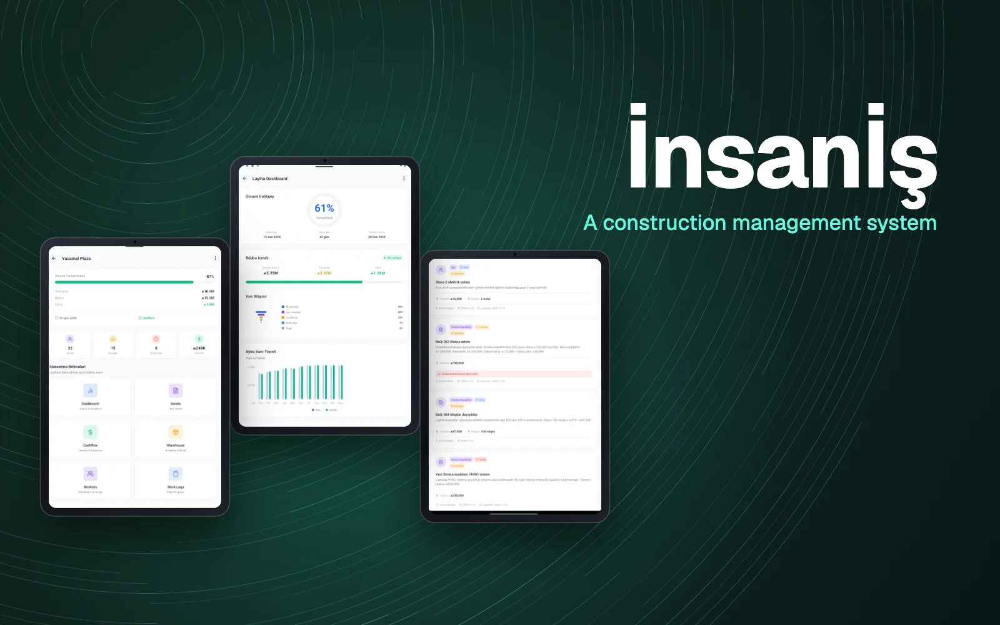
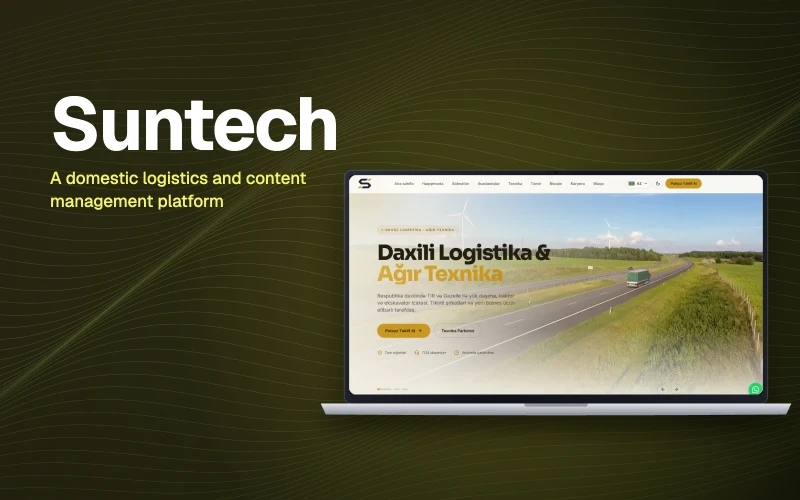
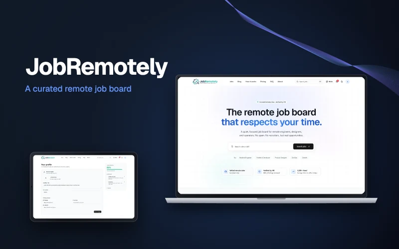

06 / B2B и SaaS
İnsanİş — Система управления строительством
Устраняет информационный разрыв между офисом и строительной площадкой.

- 3роли — руководитель, подрядчик, владелец
- Онлайнаналитика финансов и хода работ
- 1панель управления для всех объектов
01 / Обзор
İnsanİş — программное обеспечение для управления строительством, которое автоматизирует процессы, обычно остающиеся без цифровизации. Оно даёт руководителям, подрядчикам и владельцам единый центр для работ на объектах, персонала и материалов.
02 / Задача
Данные с объектов теряются между офисом и площадкой. Ежедневные журналы остаются на бумаге, о расходе материалов вечером сообщают по телефону, а перерасход бюджета выясняется только в конце месяца.
03 / Наш подход
Объекты, персонал и снабжение материалами объединены в одной панели. Ежедневные журналы, распределение задач и передача работ переведены в цифру, а финансы и ход работ привязаны к графикам в реальном времени.
04 / Результат
Руководители видят процент выполнения, сводку по бюджету и критические оповещения на одном экране. Цифровизация рутинной работы снижает операционные расходы и ускоряет принятие решений.
05 / Ключевые функции
Что умеет продукт.
- 01
Централизованная панель
Все объекты, люди и материалы — в одном месте.
- 02
Автоматизация процессов
Ежедневные журналы, задачи и передача работ.
- 03
Аналитика в реальном времени
Отчёты по финансам, ходу работ и эффективности.
- 04
Учёт BoQ и смет
План в сравнении с фактом.
- 05
Критические оповещения
Перерасход бюджета, инциденты по технике безопасности и задержки.
06 / Архитектура
Как это устроено.
Масштабируемая инфраструктура
Рассчитана на высокую нагрузку — от небольших подрядчиков до крупных корпораций.
Единый поток данных
Офис и площадка работают с одними и теми же данными.
Ролевые представления
Руководители, подрядчики и владельцы видят ровно то, что им нужно.
07 / Технологии
Технологический стек.
- Архитектура
- Full-stack
- Масштабируемость и безопасность
- Ролевой доступ
- Отчётность
- Отчёты по финансам, ходу работ и эффективности в реальном времени
08 / Другие работы
Похожие проекты.
Другие проекты направления «B2B и SaaS» и смежные работы студии.
-

-

-
